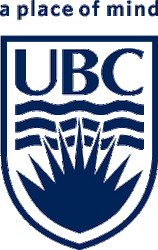
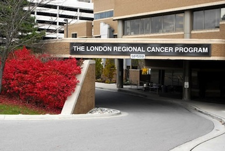

Research Interests

My interests lie in understanding the biomechanical and physiological mechanisms underlying the movement of animals. Specifically, I am interested in muscle function and how it is affected by ecological demands placed on it. I strive to use comparative studies to understand the relationship between morphology, physiology, and ecology in both aquatic and terrestrial systems. I am currently working on a project that looks at how pectoral fin and body muscles function during swimming and walking in Polypterus fishes.
- Electromyography (EMG) - A method that uses electrodes implanted into muscles to measure their in vivo electrical activity during locomotion.
- Sonomicrometry - A technique in which small, piezoelectric crystals are implanted into muscles to monitor changes in muscle fascicle length as an animal moves.
- In situ muscle physiology - In situ muscle preps allow us to explore force-length and force-velocity curves of whole muscles or individual muscle fibers.
- Particle Image Velocimetry (PIV) - A technique which allows the visualization of fluid flow through illumination of neutrally buoyant particles with a laser.
- High Speed Video - This is essential for capturing and analyzing fast animal movements.
| Address: |
Department of Biology University of Ottawa 30 Marie Curie Ottawa, ON, Canada, K1N 6N5 |
Office: 163 Gendron Hall kfoster@uottawa.ca |
Research Experiences
I completed my Ph.D. in Dr. Tim Higham's comparative biomechanics laboratory where I investigated the effects of environmental demand on muscle function and kinematics in both the hind limb and forelimb of Anolis. In 2012, I published the first portion of this work, which dealt with how incline and perch diameter impacted the three-dimensional limb kinematics of Anolis carolinensis. This work generated hypotheses about how motor control and physiology of muscles might be affected by changes in substrate characteristics. I tested hypotheses relating to the relationship between muscle activity patterns and kinematics in the context of arboreality in the same species and published the results in Proceedings of the Royal Society B in March, 2014. In my final chapter, I integrated multiple techniques (morphological dissections, kinematics, electromyography, and in situ force-length properties) to build a comprehensive picture of gastrocnemius muscle function in Anolis equestris. This work was published in the Journal of Experimental Biology in March, 2017.

My honours thesis at the University of British Columbia (Vancouver, Canada) consisted of a comparison of functional morphology and swimming strategies of two cartilaginous fishes, the spotted ratfish, a labriform swimmer, and the spiny dogfish, a small shark which uses its caudal fin to swim (pdf). This project originally began as a field project (summer 2009) at the Bamfield Marine Sciences Centre on Vancouver Island and in addition to dissections, involved optaining of high speed video of the ratfish swimming in a 12m x 2m x 1m flume at the marine station. In addition to this, I gathered particle image velocimetry data using a pulse laser in an effort to understand force production generated by the aquatic flight in this fish. I am currently analyzing this data.

In the summer of 2009 I was awarded a Natural Sciences and Engineering Research Council of Canada Undergraduate Student Research Award which I held in the Brauner lab at the University of British Columbia. There, I assisted, among others, Daniel Baker (PhD candidate) in his research investigating the physiological bases of carbon dioxide tolerance in white sturgeon. In addition to working directly with the sturegon, this experience introduced me to a variety of techniques and equipment, including how to perform Na+/K+ ATPase, lactate, and cell-free translation assays and how to use atomic absorbance spectrometers and spectrophotometers.
From January to June 2005, my last year of high school, I was selected to be the first in an initiative to promote research and science among secondary school students. I was placed in Dr. Gabriel DiMattia's oncology laboratory at the London Regional Cancer Program in London, Ontario, Canada, where I served as a lab technician and research assistant. I worked with Dr. DiMattia's masters students and in addition to training incoming lab technicians, I learned several isolating techniques including Southern, Northern, and Western blotting as I assisted in their research investigating the relationship between stanniocalcin hormones and estrogen receptor-positive breast cancer.
Publications

- Foster, K.L. and Higham, T.E. (In revision). Skink ecomorphology: forelimb and hind limb lengths correlate with habitat use, but static stability does not. Biological Journal of the Linnean Society.
- Foster, K.L., Dhuper, M., and Standen, E.M. (In press). Fin and body neuromuscular coordination changes during walking and swimming in Polypterus senegalus. Journal of Experimental Biology. view early release version
- Foster, K.L. and Higham, T.E. (2017). Integrating gastrocnemius force-length properties, in vivo activation, and operating lengths reveals how Anolis deal with ecological challenges. Journal of Experimental Biology 220, 796-806. article
- Foster, K.L., Collins, C.E., Higham, T.E., and Garland, T., Jr. (2015). Determinants of lizard escape performance: decision, motivation, ability, and opportunity. In Escaping from predators: An integrative view of escape decisions, eds. W.E. Cooper, Jr. and D.T. Blumstein.
- Foster, K.L. and Higham, T.E. (2014). Context-dependent changes in motor control and kinematics during locomotion: modulation and decoupling. Proceedings of the Royal Society B 281, 20133331. pdf
- Foster, K.L. and Higham, T.E. (2012). How forelimb and hindlimb function changes with incline and perch diameter in the green anole, Anolis carolinensis. Journal of Experimental Biology 215, 2288-2300. pdf
- Foster, K.L. and Higham, T.E. (2010). How to build a pectoral fin: Functional morphology and steady swimming kinematics of the spotted ratfish. Canadian Journal of Zoology 88, 774-780. pdf
Teaching

- Teaching assistant, Animal Behavior (BIOL 160), University of California, Riverside, Riverside, California, Spring 2015. Responsible for leading and grading four discussion sessions a week.
- Teaching assistant, Functional Anatomy of the Vertebrates (BIOL 161B), University of California, Riverside, Riverside, California, Winter 2015. Responsible for instructing and grading two laboratory sessions a week.
- Teaching assistant, Functional Anatomy of the Vertebrates (BIOL 161A), University of California, Riverside, Riverside, California, Fall 2014. Responsible for instructing and grading two laboratory sessions a week.
- Teaching assistant, Biology of Marine Fishes, Bamfield Marine Sciences Centre, Vancouver Island, Canada, Summer 2011. Involved in planning and executing laboratory and field activities, assisting students with independent projects, and grading.
- Teaching assistant, Human Physiology (BIOSC 316), Clemson University, January to May 2011. Responsible for instructing and grading two laboratory sessions a week.
- Teaching assistant, Comparative Physiology (BIOSC 475), Clemson University, August to December 2010. Responsible for instructing and grading two laboratory sessions a week.
- Teaching assistant, Biomechanics, Bamfield Marine Sciences Centre, Vancouver Island, Canada, Summer 2010. Involved in planning and executing laboratory and field activities, assisting students with independent projects, and grading.
Presentations

- Foster, K.L., Dhuper, M., and Standen, E.M. 2018. In vivo activation and contractile function of muscle during walking and swimming in Polypterus senegalus. Oral presentation given at the Conference on Bio-propulsion of Adaptive Systems at the Queens University Biological Station, Elgin, Ontario, Canada.
- Foster, K.L., Lutek, K., Silverman, J., and Standen, E.M. 2018. Neuromuscular function and kinematics of the walking to swimming transition in Polypterus senegalus. Oral presentation given at the annual meeting of the Canadian Society of Zoologists, St. John's, Newfoundland, Canada.
- Foster, K.L. and Standen, E.M. 2018. Fin and body neuromuscular coordination changes during walking and swimming in Polypterus senegalus. Oral presentation given at the annual meeting of the Society for Integrative and Comparative Biology, San Francisco, CA.
- Foster, K.L. and Standen, E.M. 2017. Neuromuscular function and coordination of fin and body musculature during swimming and walking in Polypterus senegalus. Oral presentation given at the annual meeting of the Canadian Society of Zoologists, Winnipeg, Manitoba, Canada.
- Foster, K.L. and Higham, T.E. 2017. Comparative neuromuscular function during arboreal locomotion in Anolis lizards. Oral presentation given at the annual meeting of the Society for Integrative and Comparative Biology, New Orleans, LA.
- Foster, K.L. and Higham, T.E. 2016. Comparative arboreal locomotion of Anolis lizards. Oral presentation given at the annual meeting of the Society for Integrative and Comparative Biology, Portland, OR.
- Foster, K.L. and Higham, T.E. 2015. Muscle recruitment and mechanics are modulated during arboreal locomotion in Anolis lizards. Oral presentation given at the annual meeting of the Society for Experimental Biology, Prague, Czech Republic.
- Foster, K.L. and Higham, T.E. 2015. Modulation of muscle function during arboreal locomotion in Anolis lizards. Oral presentation given in the William S. Hoar Award session at the annual meeting of the Canadian Society of Zoologists, Calgary, Alberta, Canada. (Winning presentation)
- Foster, K.L. and Higham, T.E. 2015. Modulation of muscle function during arboreal locomotion in Anolis lizards. Oral presentation given at GradFest, the Department of Biology graduate student recruitment weekend, Riverside, CA.
- Foster, K.L. and Higham, T.E. 2015. The mechanical functions of muscle and tendon during arboreal locomotion in Anolis lizards. Oral presentation given at the annual meeting of the Society for Integrative and Comparative Biology, West Palm Beach, FL.
- Foster, K.L., Garland, T., Jr., and Higham, T.E. 2015. Ecomorphology of lygosomine skinks: the impact of habitat use on limb length. Poster presentation given at the annual meeting of the Society for Integrative and Comparative Biology, West Palm Beach, FL.
- Foster, K.L. (2014). Presenting your research to judges, teachers, and adults: what to say and how to say it. Invited lecture at the Pomona Unified School District Science Fair Expo, Pomona, CA.
- Foster, K.L. (2014). Statistics for science fairs: what you need to know about basic graphing and statistics. Invited lecture at the Riverside County Office of Education Science Fair Expo, Riverside, CA.
- Foster, K.L. and Higham, T.E. (2014). Muscle and tendon function in Anolis lizards. Oral presentation given at the Southwest Organismal Biology meeting, Irvine, CA.
- Foster, K.L. and Higham, T.E. (2014). Context-dependent modulation and decoupling of motor control and kinematics during locomotion in the green anole (Anolis carolinensis). Oral presentation given in the William S. Hoar Award session at Genomes to/aux Biomes 2014 - Joint meeting of the Canadian Society of Ecology and Evolution, Canadian Society of Zoologists, and Society of Canadian Limnologists, Montreal, Canada.
- Foster, K.L. (2013). Analyzing data: why and how to make graphs for science fair projects. Invited lecture at the Coachella Valley Science Fair Expo, Palm Desert, CA.
- Foster, K.L. (2013). Statistics in science: methods, insights, and limitations of statistics in scientific research. Invited lecture at the Coachella Valley Science Fair Expo, Palm Desert, CA.
- Foster, K.L. (2013). Statistics in science: methods, insights, and limitations of statistics in scientific research. Invited lecture at the Riverside County Office of Education Science Fair Expo, Riverside, CA.
- Foster, K.L. and Higham, T.E. (2013). Functional mechanisms underlying the relationship between morphology and habitat use in lizards. Symposium presentation given at the International Congress of Vertebrate Morphology, Barcelona, Spain.
- Foster, K.L. and Higham, T.E. (2013). Neuromuscular control of arboreal locomotion: how green anoles (Anolis carolinensis) deal with changes in incline and perch diameter. Oral presentation given at GradFest, the Dept. of Biology’s graduate student recruitment weekend, Riverside, CA.
- Foster, K.L. and Higham, T.E. (2013). Neuromuscular control of arboreal locomotion: how green anoles (Anolis carolinensis) deal with changes in incline and perch diameter. Oral presentation given at the annual meeting of the Society for Integrative and Comparative Biology, San Francisco, CA.
- Foster, K.L. and Higham, T.E. (2012). How fore- and hindlimb function changes with incline and perch diameter in Anolis carolinensis. Oral presentation given at the annual meeting of the Society for Integrative and Comparative Biology, Charleston, SC.
- Foster, K.L. (2011). Biogeography and Phylogeography. Invited lecture for Herpetology (BIOSC 468), Clemson University, Clemson, SC.
- Foster, K.L. and Higham, T.E. (2010). Functional morphology and biomechanics of ratfish steady swimming. Oral presentation given at the annual meeting of the Society for Integrative and Comparative Biology, Seattle, WA.
- Foster, K.L. (2009). Flight of the Dr. Seuss fish: Pectoral fin functional morphology of the spotted ratfish (Hydrolagus colliei). Oral presentation at Bamfield Marine Sciences Centre, BC, Canada.
News
- 07/23/18: I gave an oral presentation about the contractile mechanics of pectoral fin muscle during swimming and walking in (Polypterus senegalus) at the Conference on Bio-propulsion of Adaptive Systems at the Queens University Biological Station, Elgin, Ontario.
- 07/02/17: My paper about fin and body neuromuscular activation in walking and swimming Polypterus senegalus was just accepted for publication in the Journal of Experimental Biology. The advance copy of the full text can be found here.
- 05/08/17: I gave an oral presentation about fin and body muscle activation patterns during the swimming to walking transition in bichirs (Polypterus senegalus) at the Canadian Society of Biologists annual meeting in st. John's, Newfoundland.
- 01/05/18: I gave an oral presentation about fin and body muscle activation patterns and kinematics of swimming and walking bichirs (Polypterus senegalus) at the Society for Integrative and Comparative Biology annual meeting in San Francisco, California.
- 08/25/17: The Standen Lab is looking for new graduate students. Both Canadian and international students are highly encouraged to apply. To see the full ad, click here (opens in a new tab).
- 05/16/17: I gave an oral presentation about fin and body muscle activation patterns and kinematics of swimming and walking bichirs (Polypterus senegalus) at the Canadian Society of Zoologists annual meeting in Winnipeg, Manitoba.
- 03/01/17: The third chapter of my dissertation was just published in the Journal of Experimental Biology!
- 01/08/17: I gave an oral presentation comparing the muscle activation patterns of five Anolis species at the SICB annual meeting in New Orleans, LA.
- 09/01/16: I have accepted a postdoc position in Dr. Emily Standen's comparative and evolutionary biomechanics lab at the University of Ottawa. I can't wait to get started working with this fabulous group!
- 06/06/16: I successfully defended my dissertation! Many thanks to all who attended, especially my dissertation committee: Dr. Tim Higham, Dr. Mark Chappell, and Dr. Scott Currie.
- 01/06/16: I gave an oral presentation about the comparative locomotor kinematics of six Puerto Rican Anolis species at the SICB annual meeting in Portland, OR.
- 09/22/15: We have two new lab mates: welcome to Emily Naylor and Jessica Tingle
- 08/22/15: I just got back from field work in Puerto Rico - Clint Collins (a lab mate) and I caught 42 anoles from 6 species! Stay tuned for the comparative chapter of my dissertation!
- 07/01/15: I gave an oral presentation about muscle function in Anolis equestris at the SEB annual meeting in Prague, Czech Republic.
- 05/28/15: I won the William S. Hoar Award for best student oral presentation at the annual meeting of the Canadian Society of Zoologists in Calgary, Alberta, Canada.
- 04/23/15: I was awarded a Company of Biologists Travel Grant by the Society for Experimental Biology to help subsidize my travel to their annual meeting in Prague, Czech Republic.
- 04/15/15: I was awarded a UCR Dissertation-Year Fellowship for the upcoming final year of my PhD.
- 04/07/15: I was awarded a Canadian Society of Zoologists travel grant to help subsidize my travel to the upcoming annual meeting of the Canadian Society of Zoologists in Calgary, Alberta, Canada.
- 04/06/15: I was chosen as a finalist to compete for the William S. Hoar Award for best student oral presentation at the upcoming annual meeting of the Canadian Society of Zoologists in Calgary, Alberta, Canada.
- 03/14/15: I gave an oral presentation on the modulation of muscle function in Anolis equestris at GradFest, the UCR Department of Biology annual graduate student recruitment weekend.
- 03/01/15: The UCR Biology grad students hosted a Science Day at the Riverside Metropolitan Museum. We had a great turnout!
- 01/07/15: I gave an oral presentation on the function of muscles and tendons in Anolis equestris at the SICB annual meeting in West Palm Beach, FL. The talk was just featured in a post on Anole Annals!
- 01/04/15: I presented a poster on the ecomorphology of lygosomine skinks at the SICB annual meeting in West Palm Beach, FL. The poster was just featured in a post on Anole Annals!
- 10/11/14: I gave a lecture at the Pomona Unified School District Science Fair Expo in Riverside, CA.
- 10/04/14: I gave a lecture and consulted at the Riverside County Office of Education Science Fair Expo in Riverside, CA.
- 09/20/14: I gave an oral presentation at the Southwest Organismal Biology meeting, in Irvine, California.
- 05/28/14: I gave an oral presentation in the William S. Hoar Award session at Genomes to/aux Biomes 2014 - Joint meeting of the Canadian Society of Ecology and Evolution, Canadian Society of Zoologists, and Society of Canadian Limnologists, in Montreal, Canada.
- 05/14/14: UCR awarded me a Dissertation Research Grant.
- 05/12/14: UCR awarded me the Earle C. Anthony Travel Award to help subsidize my upcoming participation at the joint meeting of the CSZ, CSEE, and SCL in Montreal, QC, Canada (May 25-29, 2014).
- 04/28/14: I have received an EPCOR Water Ltd. Student Travel Award to help subsidize my upcoming participation at the joint meeting of the Canadian Society of Zoologists (CSZ), Canadian Society for Ecology and Evolution (CSEE), and Society of Canadian Limnologists (SCL) in Montreal, QC, Canada (May 25-29, 2014).
- 04/21/14: I was awarded a Vaughan H. Shoemaker Graduate Fellowship from UCR to support my upcoming field research in Jamaica.
- 03/26/14: I wrote an article for Anole Annals to highlight the impact of my recent Proc. R. Soc. B. paper on Anolis research.
- 03/15/14: I have been selected as one of the 6 finalists to compete for the Hoar Award for student excellence in scientific research and communication. The finalists will present in a special session at the annual meeting of the Canadian Society of Zoologists (a joint meeting with the Canadian Society of Ecology and Evolution and Society of Canadian Limnologists) in Montreal, QC, Canada (May 25-29, 2014).
- 03/15/14: I helped organize the UCR EEOB program's recruitment weekend, called GradFest. We had many interesting talks and the weekend went off really well.
- 03/14/14: My interview article on UCR Today was picked up by Science Daily.
- 03/13/14: My newest paper has been highlighted in a feature article on UCR Today.
- 03/12/14: My newest paper has been published online in Proceedings of the Royal Society B!
- 03/08/14: I participated at the Biology Department's station of UCR's Discover Day (undergraduate recruitment event)
- 03/02/14: The Higham lab ran a "First Sundays" event a the Riverside Metropolitan Museum. It was called "Animal Olympics" and it was a huge success!
- 02/17/14: My most recent paper, "Context-dependent changes in motor control and kinematics during locomotion: modulation and decoupling", has been accepted for publication in Proceedings of the Royal Society B!
- 02/11/14: I helped judge the Riverside Unified School District science fair in Riverside, CA.
- 01/07/14: I helped judge the science fair at Alcott Elementary School in Riverside, CA.
- 12/07/13: I consulted and gave two lectures, one about statistics for older students and teachers and one about graphing for younger students, at the first annual Coachella Valley Science Fair Expo in Palm Desert, CA.
- 11/13/13: Our lab gave presentations and performed experiments about animal superpowers as an outreach activity for grades K-6 at Alcott Elementary School, in Riverside, CA. We talked about the different adhesive mechanisms animals use to climb and the difference between biting and suction feeding in fishes.
- 10/31/13: I was interviewed as an outside expert in this article, highlighting a recent paper about tree frog biomechanics written by Anthony Herrel and others.
- 10/26/13: Our lab at UCR hosted the SW regional DCB/DVM SICB. It was a great success!
- 10/05/13: Our lab is hosting the SW regional DCB/DVM SICB on Oct. 26, 2013 - registration is now open!
- 10/05/13: Lectured and consulted at the Riverside County Office of Education Science Fair Expo in Riverside, CA.
- 07/12/13: Presented in a symposium at the International Congress of Vertebrate Morphology in Barcelona, Spain.
- 06/17/13: Passed my comprehensive exams - I am now a PhD candidate!
- 04/17/13: Elected EEOB GSA president for 2013-14 academic year.
- 04/15/13: We have another new post-doc! Welcome to Bill Stewart!
- 01/07/13: Presented at SICB conference in San Francisco, CA.
- 12/03/12: Our new post-doc, Aleksandra Birn-Jeffery, arrived!
- 11/27/12: Awarded UCR GSA travel grant.
- 09/17/12: We have 3 new grad students in the lab!
- 05/14/12: Awarded UCR Fee Fellowship.
- 06/06/12: Anole kinematics paper published in JEB.
- 01/04/12: Presented at SICB conference in Charleson, SC.
- 08/08/11: Lab moved from Clemson to UCR.
- 06-07/11: TA'd Biology of Marine Fishes course at BMSC.
- 03/21/11: Awarded BMSC grad student scholarship.
- 03/18/11: Awarded NSERC PGS-D.
- 03/03/11: Awarded Clemson Professional Enrichment Grant.


Collaborators

- Emily Standen - University of Ottawa, Comparative and evolutionary biomechanics, primarily in Polypterus fishes
- Tim Higham - University of California, Riverside, Comparative biomechanics and muscle physiology, primarily in herps
- Ted Garland - University of California, Riverside, Evolutionary physiology
- Aleksandra Birn-Jeffery - Queen Mary, University of London, Comparative biomechanics and kinetics
- Emily Kane - Georgia Southern University, Comparative biomechanics of locomotion and feeding in fishes
- Jeff Olberding - University of California, Irvine, Comparative biomechanics and muscle physiology in herps
- Bill Stewart - Whitney Laboratory for Marine Bioscience, Comparative biomechanics in fishes
- Clint Collins - University of California, Riverside, Comparative biomechanics and locomotor performance in herps
- Kevin Jagnandan - University of California, Riverside, Comparative biomechanics and tail autotomy
- Vicky Zhuang - University of California, Riverside, Functional morphology and biomechanics of gecko feet
- Jessica Tingle - University of California, Riverside, Functional morphology and biomechanics of sidewinding snakes
- Emily Naylor - University of California, Riverside, Functional morphology and functional ecology of tetrapods